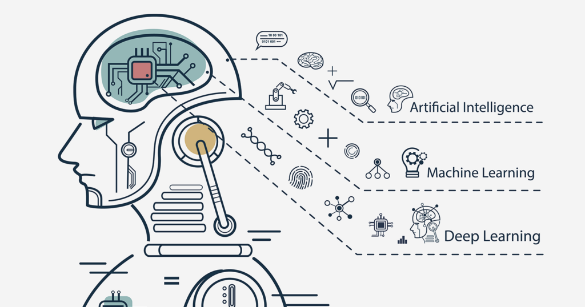

MLEngineer
Machine Learning

Machine Learning
Machine learning (ML) is the study of computer algorithms that can improve automatically through experience and by the use of data. It is seen as a part of artificial intelligence. Machine learning algorithms build a model based on sample data, known as training data, in order to make predictions or decisions without being explicitly programmed to do so. Machine learning algorithms are used in a wide variety of applications, such as in medicine, email filtering, speech recognition, and computer vision, where it is difficult or unfeasible to develop conventional algorithms to perform the needed tasks.
My Experience:
My first work on Machine Learning was in my final year of my undergraduate degree for my final year project. The project was to Automate Sorting Logistics by reading handwritten pincodes using Optical Character Recognition. We used some basics of TensorFlow, Keras and even Google AI to get a good estimate of the handwritten characters written by us. We also published a Journal on it at IJERT (International Journal of Engineering research and Technology).
During my office tenure, I participated in a Hackathon where we decided to work on a topic which was a requirement by the company. The topic was to build a Portal where various companies could bid on products offered by the company and order them in bulk for a lower price. We built a product which had a complete User Interface which the companies could log into with their respective credentials. This project also included a model which would predict the average cost of the products and how much they could be bought for based on previous purchases. It also had a DB for storing this data and used that to make the predictions.
I am currently pursuing my Masters in Computer Engineering at San Jose State Univeristy with a specialization in Data Science. I am currently pursuing courses in Data Mining and Machine learning where I am working on concepts like Supervised and Unsupervised Learning and the differnet models it consists of. I am also currently working on two projects which are 'Covid Vaccine Comparison' and 'Youtube Dislike Extension' in which we use various ML techniques like Regression, PCA, KNN, Association Rule Mining and so on to determine the best model to give high accuracy prediction rates.
Projects I've Worked on:
Tools, IDEs and Servers I used: